CODEC stands for Community of Diverse Empowerment in Computing.
CODEC is a community space created to make tech accessible to everyone by sharing resources, supporting one another, and celebrating our diverse experiences in computing.
Our goal is to build a supportive community where:
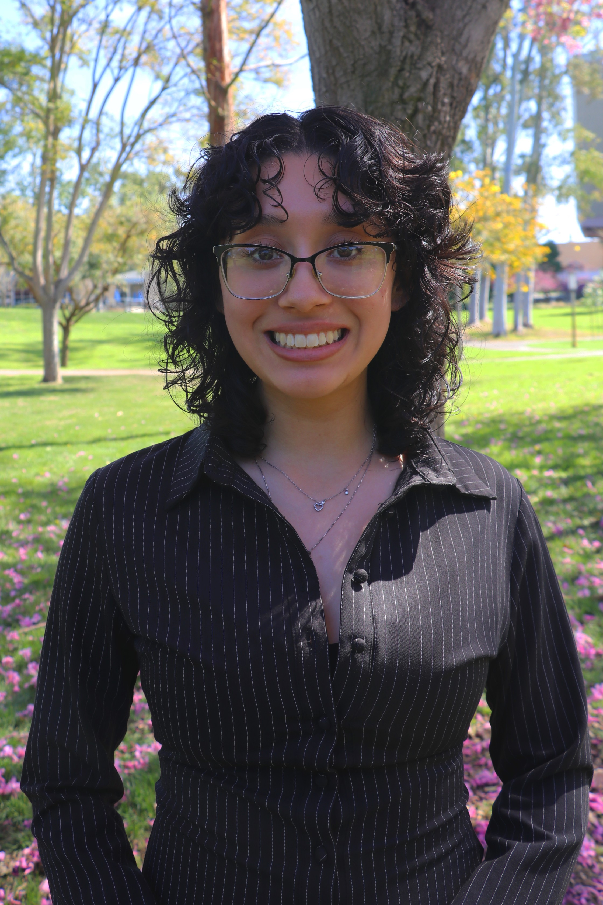
President
Hi! My name is Arianna Gonzalez, I am a third year + data sci major and I am the current President of CODEC! Some things I like to do is hang out with friends, grab matcha + pastries, listen to kpop, and watch shows! I am excited to see what CODEC becomes in the future and I hope everyone will enjoy our events, meet new people, and gain new experiences. If you ever see me on campus + CODEC meetings, please say hi!
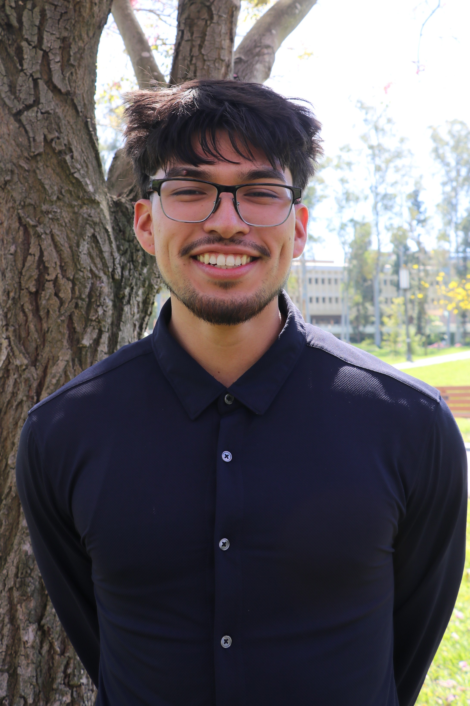
Vice President
Hello! I'm Kanec Olivares, Vice President of CODEC. I’m a third-year Computer Science student. Fun fact: I’ve been commuting since my freshman year. Outside of school, I love playing the accordion, mostly norteño/corridos. I look forward to meeting you all and am excited to see how CODEC will grow! If you ever see me, please come say hi!
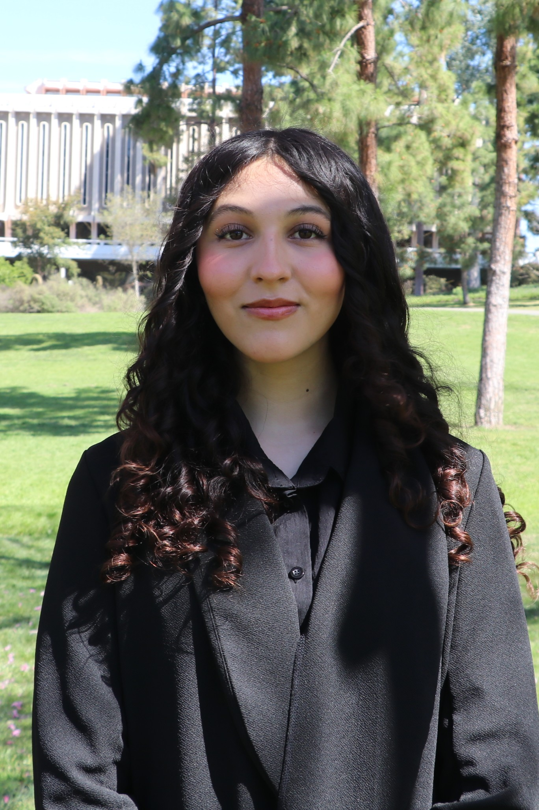
External Board
Hi! My name is Mia Aburto, I am a third year software engineering major and I am a board member for the external team. I love travelling so I studied abroad in the fall quarter. I also enjoy drawing, listening to music and going to theme parks with my friends! One thing I love about CODEC is the effort that all the team members put in, because all of us want to help students and provide resources that we would have liked to have in our earlier years. Hope everyone enjoys today’s event!
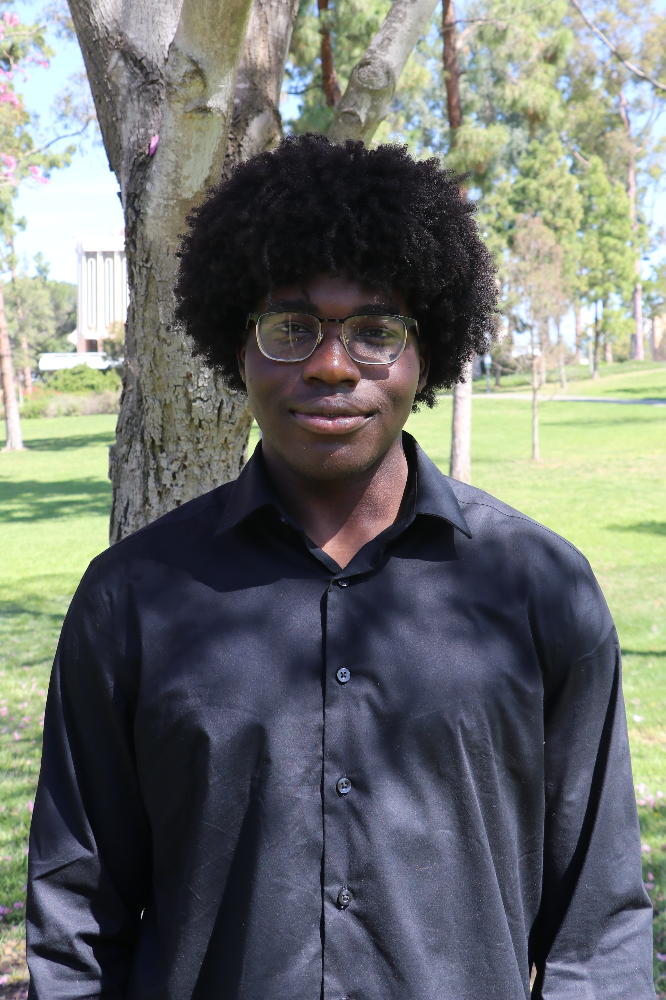
External Board
Hey everyone, I'm Chidubem Adinna, a 3rd year Software Engineering major and I'm currently the Treasurer and on the external team. I love trying all kinds of food, and my favorite cuisine right now is Greek/Mediterranean cuisine..
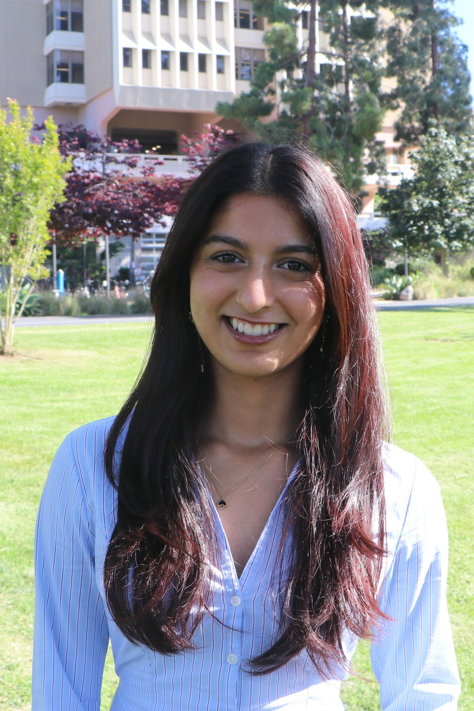
Internal Board
Hii! My name is Anushka Dubey, I'm a 2nd year in Informatics + Game Design and Interactive Media and I'm currently an internal co-chair in CODEC. Some activities I enjoy doing with my friends is beach hopping, trying out new cafes/restaurants, and watching movies. I'm super excited to be coordinating events for CODEC and meeting everyone through this community! See y'all soon!
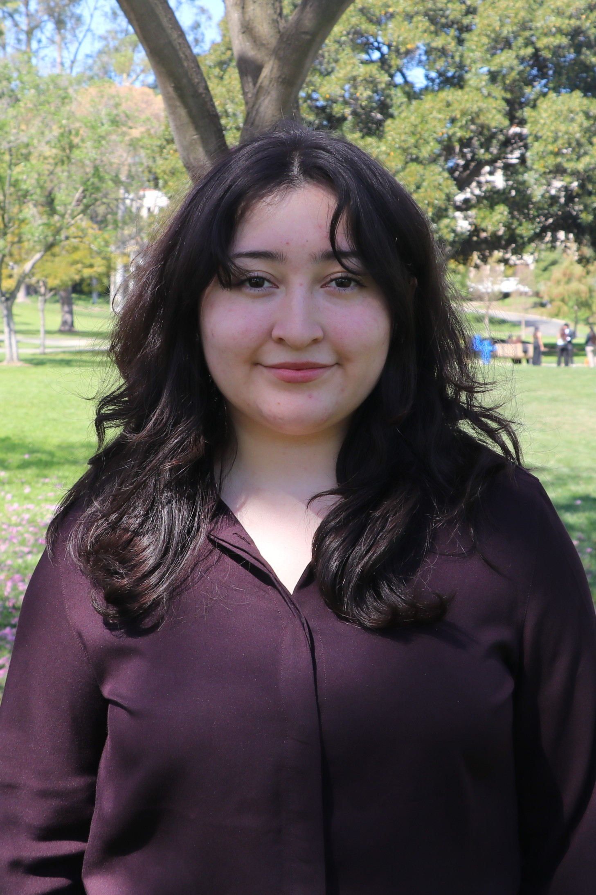
Internal Board
Hiii! My name is Lizbeth Ramírez and I’m a 4th year Data Science major. I’m one of the internal leads for CODEC :D! I enjoy going to cafes, watching anime, listening to kpop and playing pickleball. I’d love to see more people come to our events in the future and gain opportunities, experience and mentorship though CODEC. Feel free to say hi if you ever see me around!
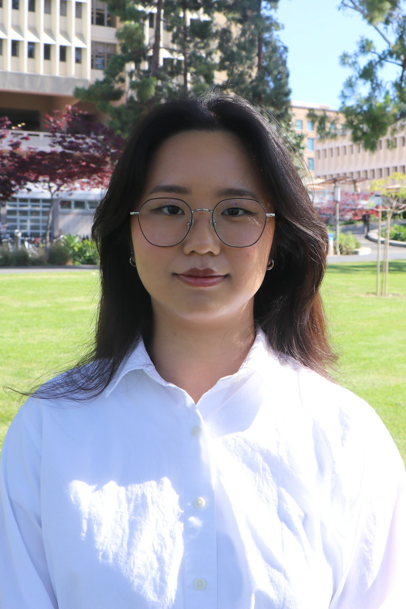
Internal Board
Hi! I'm Luqi, and I'm a 3rd year Computer Science major + Asian Studies minor. In my free time, I like to watch anime, play video games, cook/bake, crochet/any arts&crafts, and engage with K-Pop. I'm currently shadowing as co-Internal Head at CODEC, so if you have something you want to learn more about, feel free to let me know and it could possibly be a workshop! I am excited to meet everyone and learn new skills with you guys! Feel free to say hi if you see me on campus!
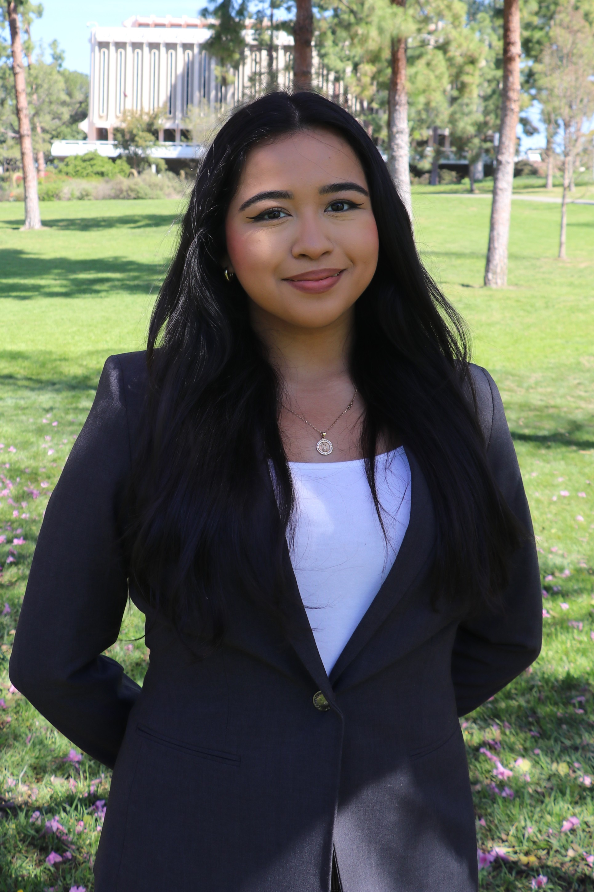
Marketing Board
Hi! My name is Viviana Salazar. I am a third-year computer science major and I am apart of CODEC's marketing team this year! I joined CODEC because I wanted to be part of a community that uplifts underrepresented groups in tech. I enjoy arts and crafts, playing Animal Crossing, exploring shops and cafes, and spending with my dog when I visit home! I also love to yap and meet new people, so don’t hesitate to reach out!
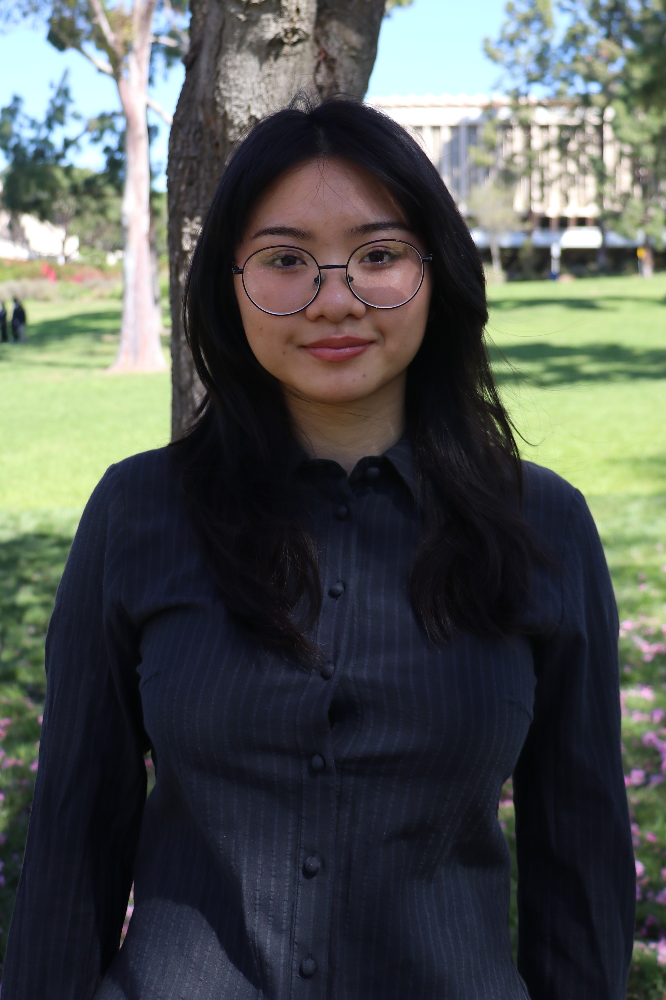
Marketing Board
Hi everyone! My name is Shirley Wu, a second year double majoring in Informatics and Business Information Management. On CODEC's marketing team, I serve as one of the marketing chairs! When I'm not on campus, you'll probably find me hiking the trails around Irvine or curled up at home binge watching horror movies. I'm always excited to hear about people's stories and their curiosities, so don't be afraid to strike up a conversation because I'd love to get to know you!
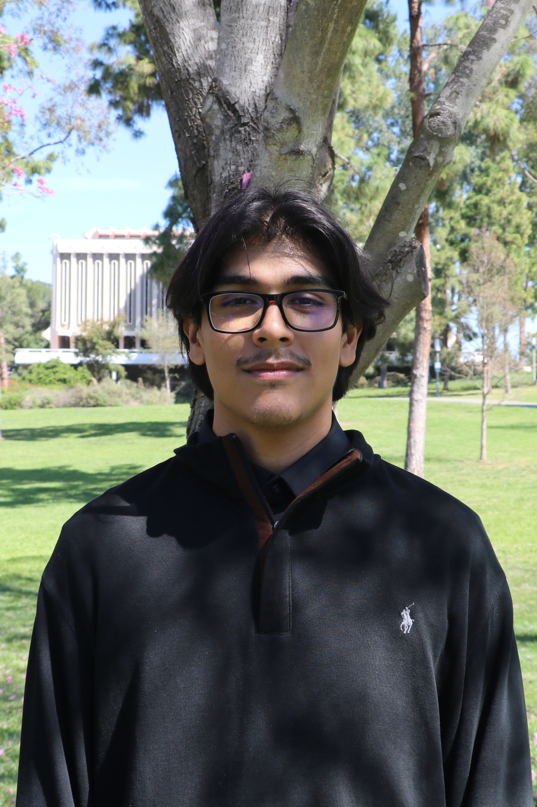
Tech Lead
Hello! My name is Ivan Gonzalez. I am 3rd year Informatics major with a specialization in Health Informatics. For CODEC I am currently Tech Lead and in charge of the development of the Club Hub. I chose to take this position within CODEC because I believe in the mission of our organization. I enjoy bowling on Tuesdays from 9-11pm when it costs $20 (shoes included).
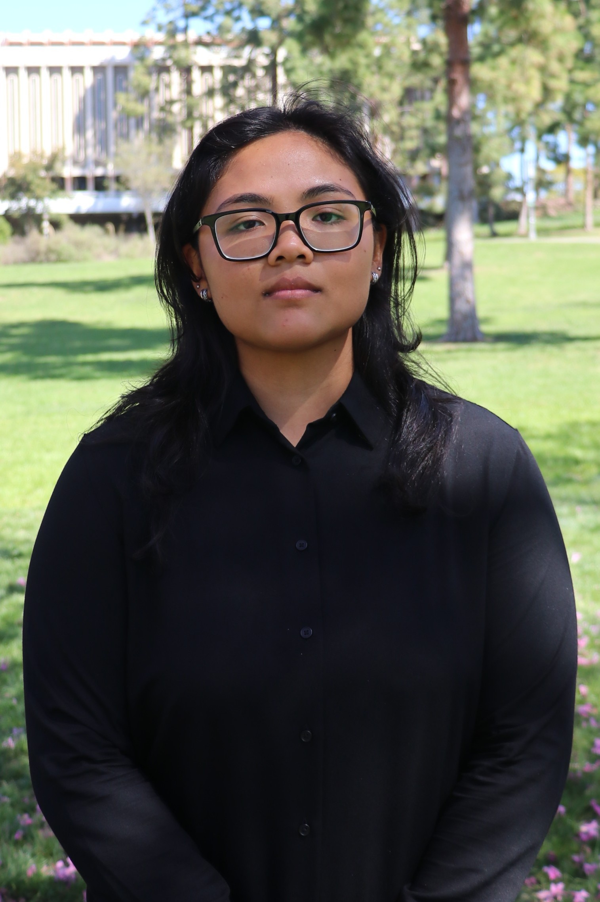
Tech Lead
Hi! I'm Akriti, a third-year Data Science major and part of this year's Tech Lead board. In my free time, I love listening to music and going to the gym. I'm super excited to grow with CODEC and I'm looking forward to meeting everyone!